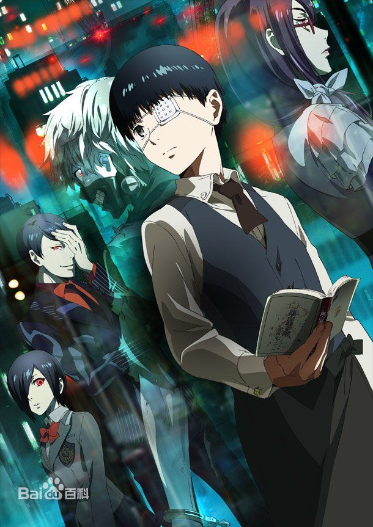

东京食尸鬼
（studio Pierrot改编的电视动画）
电视动画《东京食尸鬼》改编自日本漫画家石田スイ原作的同名漫画。故事以架空世界的现代东京为背景，描述以人肉为主食，被称为�兄郑�Ghoul）之人型怪物。分类上被归类为“黑暗奇幻”（Dark fantasy），同时也含有科学奇幻的要素。在2014年1月17日发售的原作单行本第10卷的书带上，正式宣布了《东京食尸鬼》TV动画化的决定[1] 。电视动画于2014年7月3日开始播放，全12集。
故事简介
在东京街头，一群成谜的吃人怪人“�兄帧闭�悄悄在人类世界扩张他们的势力──平凡的大学生金木研因为遭到�兄至允扯�性命垂危。医生为他进行了器官移植手术，然而器官提供者其实是�兄帧�。在病床上醒来的金木很快就感觉到身体不对劲，原本记忆中美味的食物全都走味到难以下咽。一开始，即使好几天不吃东西他也不会饿，但不久，激烈的空腹感开始折磨他。当他意识到，能引起他食欲的对象只剩下街上错身而过的男男女女。
在群众中潜伏着，狩猎着人类，这个吞食着死尸的怪人，人们称其为食尸鬼，在青年和怪人相遇之时，充满波折的命运的齿轮开始转动了！
分集剧情
第1话 悲剧
东京，这里潜伏着混在人群中并捕猎人类的怪物“�兄帧薄Ｏ不抖潦榈拇笱�生－金木研，在常去的咖啡厅“安定区”里，遇到了同样喜欢小说家－高�踩�作品的神代 利世，两人约好要一起去书店约会。但金木还不知道，之后发生的意外事故将改变自己的命运…。金木虽在事故里受了重伤，但经过手术后捡回一命。而当金木醒来 后却发现“不管吃什么都觉得很难吃”，渐渐察觉自己产生异变…!?
第2话 孵化
金木被尸体的香味吸引，而和身为�兄值慕醵灾拧Ｕ馐本攘怂�的是安定区的店员－雾�攵�香和店长芳村。芳村将某个小包裹拿给受到�兄值募⒍鏊�苦的金木。隔天，看了英的简讯而回到大学的金木，英介绍了一位姓“西尾”的学长给他认识，而这位学长就是先前和他对峙的�兄郑�“锦”。他虽然表现的与普通人没两样，但在回家路上却突然袭击英，并害英昏了过去。“抱歉弄脏了你的食物”，锦在金木面前又露出了身为�兄值谋拘�!?
第3话 白鸽
身为�兄值牡芽诹棺雍退�的女儿雏实暂时躲到了“安定区”生活，雏实脸上孤单的表情让金木感到很在意。此时，金木和芳村的得力助手?四方莲示一起为了无法狩猎的�兄值鞫仁沉浮Ａ硪幻妫�目的为歼灭东京所有�兄值�CCG在利世的事件发生後，就把“安定区”所在的20区列进了搜查范围里。身为上等搜查官的真户吴绪和亚门钢太朗一同前往了20区…
第4话 晚餐
被称为“美食家”的�兄郑�月山习造访安定区。董香露出厌恶的表情，直指他是20区的麻烦人物，并警告金木不要月山扯上关系，但是月山盯上了金木身上的特殊香味，不断设法与金木接触。金木在意起利世这个造成自身悲剧的原因，他被月山口中“利世常去的店”所吸引，来到了“�兄植吞�”。
第5话 残痕
因董香身体不适而去探望她的金木，发现董香非常重视名为依子的人类朋友。而在回程时，金木救了被�兄窒�击的锦。金木将锦送回住处并遇见了锦的恋人－西野贵未。贵未虽然知道锦是�兄郑�却仍和锦一起生活。但之后贵未却被悄悄跟踪金木的月山抓走。金木和锦一起去救贵未，但 …。
第6话 骤雨
金木在安定区教雏实识字。认识了越来越多字的雏实，为了学习更多字给父亲一个惊喜，和凉子一起出门买书。但这时CCG的搜查官草场和中岛正好在附近搜寻�兄帜概�。早一步注意到异状的凉子立刻拉起雏实的手想要逃走，但这时雏实却查觉到了某个"异变"…。
第7话 幽禁
雏实的母亲?凉子被CCG搜查官真户夺去了性命，金木对於自己什么都做不到感到十分懊悔。另一面，董香得知这个消息后，向芳村表示应该要报仇，但芳村以众人的安全为由，否决了她的提议，并说雏实的脸已经被搜查官看到，因此要把她移到24区。无法接受的董香想着凉子和雏实的事，悄悄下了一个重要决心。
第8集 圆环
雏实偷偷离开“安定区”，然而那是真户设下的巧妙陷阱。董香才刚找到雏实，真户就出现在她面前。同一时刻，一样在找雏实的金木正与另一位搜查官亚门对峙。在战斗中，亚门质问金木“有没有想过那些被�兄侄嶙咔兹耍�其遗族所承担的伤痛?”，并断言是�兄秩谜飧鍪澜缗で�。
第9集 鸟笼
“安定区”的人们总算逐渐回到以往的日常生活了。此时金木为了更了解关于改变自己命运的利世情报，独自拜访了14区的酒吧“Helter Skelter”。在那里，同为�兄值南盗Ц嫠咚�利世以前曾待过11区。另一面，11区谜样的�兄置牵�正展开一连串可疑的行动…？
第10集 青桐
CCG的11区分部，被自称为“青桐树”的�兄旨�团袭击，没有幸存者。得知这件事後，CCG开始准备有史以来最大规模的讨伐战。另一方面，有个名为万丈数壹的男人闯进了安定区，他十分仰慕利世，在得知“青桐树”的目标是利世后，便来到安定区想劝利世逃走。但这时“青桐树”的少年干部－“绚都”却突然出现在众人面前。看到他之后，董香面露惊讶的神色！
第11集 冲天
为了救出被“青桐树”抓走的金木，芳村、四方、董香、锦、雏实与诗齐聚一堂，此外还加入一位意想不到的人物!CCG的亚门一行人与其他搜查官，准备以超越千人的阵仗进攻位於11区的青桐树据点。“青桐树”与CCG，还有安定区的三方之战一触即发…
第12集 �兄�
在“青桐树”的据点展开的战斗越来越激烈了。�兄钟肴死嘀�战…这场战斗会如何收尾呢？“安定区”的伙伴有办法救出金木吗？另一方面，被青桐树的干部之一－壁虎带走的金木，遭受了超乎想像的残忍虐待。意识朦胧的金木，他内心世界里突然出现的人物是…？